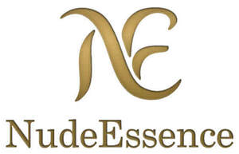

Trade Mark Journal No.2025/047 21 November 2025
UK00004278560 15 October 2025 (10,25,35)

- Class 10
- Compression garments; Compression socks for medical or therapeutic use; Therapeutic hosiery; Therapeutic garments for people; Compression hosiery; Elastic compression bandages for surgical purposes; Compression bandages; Therapeutic garments for animals; Medical compression stockings; Elastic compression bandages for medical purposes; Medical compression tights; Medical stockings with decreasing compression; Compression stockings; Compression bandages [elastic or supportive]; Post-operative pressure garments; Pressure garments for medical treatment; Corsets for therapeutic use; Stockings for therapeutic purposes; Orthopaedic compression supports; Therapeutic support bandages; Body limb compression sleeves for athletic use; Graduated compression hosiery; Air inflatable garments for medical purposes; Radiation shielding textiles for use in therapeutic treatment; Electro-stimulation apparatus for use in therapeutic treatment; Protective clothing for surgical purposes; Pillows for therapeutic use; Elastic stockings for surgical use; Medical cooling apparatus for use in therapeutic hypothermia; Protective breathing masks made of non-woven materials for surgical applications; Elastic stockings for surgical purposes; Medical drapes of non-woven textile materials; Thermal electric compresses for medical use; Radiation shielding textiles for use in the therapeutic treatment of animals; Heat pads for therapeutic treatment; Disposable steam-heated masks for therapeutic purposes; Body limb compression sleeves; Biomagnetic rings for therapeutic or medical purposes; Support garments for medical use; Disposable steam-heated patches for therapeutic purposes; Endoscopes for therapeutic use; Splinting materials for surgical use; Apparatus for the therapeutic toning of the body; Apparatus for the therapeutic stimulation of the body; Therapeutic weighted blankets; Protective breathing masks made of non-woven materials for medical applications; Apparatus for the therapeutic toning of the muscles; Materials for bandaging [supportive]; Bandaging materials [supportive]; Materials for bandaging [suspensory]; Materials for bandaging [elasticated]; Therapeutic apparatus incorporating massaging facilities; Bandages [supportive] for surgical purposes; Synthetic padding bandages [supportive]; Stair climbing machines for medical therapeutic use; Elastic stockings [for medical purposes]; Apparatus for the therapeutic stimulation of the muscles; Clothing, headgear and footwear for medical personnel and patients; Sterile clothing for surgical use; Compression panty hose; Limb compression instruments; Clothing, headgear and footwear, braces and supports, for medical purposes; Protective clothing for medical purposes; Therapeutic facial masks; Gowns for surgical use; Compressing screws in the nature of orthopaedic surgical instruments; Protective breathing masks for surgical applications; Thermal massage pads; Elastic bandages, not for dressings; Socks (Elasticated -) for medical purposes; Ultrasonic diagnostic instruments for therapeutic purposes; Bandages for orthopaedic purposes; Injection sleeves for medical use; Infusion apparatus for therapeutic purposes; Bio therapeutic facial masks.
- Class 25
- Over-trousers; Headshawls; Lumberjackets; Chemisettes; Wind-jackets; Sandal-clogs; Sweatjackets; Mankinis; Bushjackets; Half-boots; Petti-pants; Camiknickers; Babies' outerclothing; Sunsuits; Neckerchieves; Ladies' outerclothing; Rainshoes; Tailleurs; Babies' undergarments; Children's outerclothing; Infantwear; Pantie-girdles; Earbands.
- Class 35
- Online retail store services in relation to clothing; Online retail store services relating to clothing; Online retail services relating to jewelry; Online retail services relating to cosmetics; Online retail services relating to clothing; Online retail services for downloadable virtual clothing; Online retail services relating to handbags; Online retail services relating to toys; Online retail services in relation to downloadable virtual footwear; Online retail services in relation to downloadable virtual clothing; Online retail services relating to luggage; Online retail services in relation to downloadable virtual headwear; Online retail services in relation to downloadable virtual handbags; Online retail store services relating to cosmetic and beauty products; Business management of wholesale and retail outlets; Retail store services in the field of clothing; Retail services in relation to downloadable virtual footwear; Retail of third-party pre-paid cards for the purchase of entertainment services; Unmanned retail store services relating to food; Retail services connected with the sale of furniture; Online retail services in relation to downloadable virtual works of art; Retail services relating to jewelry; Retail services in relation to smartphones; Retail services in relation to bakery products; Retail services in relation to downloadable virtual clothing; Business management of retail outlets; Unmanned retail store services relating to drink; Retail services in relation to games; Retail services relating to delicatessen products; Retail services in relation to downloadable virtual handbags; Retail services in relation to downloadable virtual headwear; Retail services connected with stationery; Retail services in relation to jewellery; Mail order retail services for cosmetics; Retail services relating to furniture; Retail of third-party pre-paid cards for the purchase of telecommunication services; Retail services in relation to pet products; Retail services in relation to horticulture products; Online retail services for downloadable ring tones; Retail services in relation to gardening products; Retail services relating to food; Retail services for computer software; Shop retail services connected with carpets; Retail services relating to clothing; Retail services in relation to furniture; Retail services in relation to footwear; Retail services relating to horticultural products; Retail services in relation to clothing; Mail order retail services for clothing; Retail services in relation to saddlery; Retail services in relation to confectionery; Retail services in relation to beer; Retail services in relation to coffee; Online advertising services; Retail services in relation to safes; Retail services in relation to educational supplies; Retail services in relation to toys; Retail services in relation to downloadable electronic publications; Retail services in relation to tobacco; Retail services in relation to seafood; Retail services relating to candy; Online business networking services; Retail services in relation to smartwatches; Retail services in relation to vehicles; Retail services in relation to fuels; Retail services in relation to computer hardware; Retail services in relation to bags; Retail services via catalogues related to beer; Retail services in relation to lubricants; Retail services in relation to fashion accessories; Retail services in relation to stationery supplies; Retail services relating to batteries; Retail services in relation to desserts; Retail services in relation to toiletries; Retail services relating to automobile accessories; Administration of the business affairs of retail stores; Retail services in relation to computer software; Retail services in relation to meats; Mail order retail services for clothing accessories; Retail services in relation to fabrics; Online retail services for downloadable and pre-recorded music and movies; Retail services in relation to car accessories; Retail services in relation to yarns; Retail services in relation to heaters; Retail services in relation to teas; Retail services relating to flowers; Retail services relating to home textiles; Retail services in relation to cocoa; Retail services in relation to chocolate; Retail services in relation to downloadable virtual works of art; Retail services in relation to hair products; Retail services in relation to tableware; Retail services in relation to pushchairs; Mail order retail services related to beer; Retail services in relation to foodstuffs; Retail services in relation to wearable computers; Retail services in relation to mobile phones; Retail services relating to furs; Retail services in relation to domestic electronic equipment; Advertising the goods and services of online vendors via a searchable online guide; Retail services in relation to headgear; Retail services in relation to bicycles; Retail services relating to accumulators; Retail services relating to horticultural equipment; Retail services in relation to weapons; Providing a searchable online advertising guide featuring the goods and services of online vendors; Retail services in relation to sorbets; Retail services in relation to luggage; Retail services relating to sporting goods; Retail services in relation to veterinary articles; Retail services in relation to cutlery; Retail services in relation to art materials; Retail services in relation to articles for use with tobacco; Retail services via catalogues related to foodstuffs; Retail services relating to fruit; Retail services in relation to chemicals for use in horticulture; Mail order retail services connected with clothing accessories; Retail services in relation to umbrellas; Retail services in relation to sewing articles; Retail services relating to automobile parts; Online retail services for downloadable digital music; Retail services relating to bakery products; Retail services in relation to furnishings; Retail services in relation to cookware; Retail services in relation to dairy products; Retail services in relation to lighting; Retail services in relation to clothing accessories; Retail services in relation to bicycle accessories; Retail services in relation to horticulture equipment; Retail services in relation to paints; Retail services via catalogues related to non-alcoholic drinks.
Elena Likhodaeva